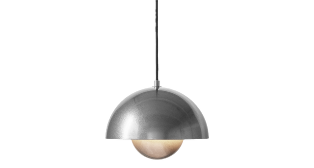

Le passeport numérique de produit, conçu pour chaque secteur.
Il n’existe pas un DPP unique. Avec l’ESPR, chaque groupe de produits a son propre acte délégué, avec ses propres données obligatoires, et ces données sont détenues par différents fournisseurs dans différents formats. Keystone tient une fiche par produit et génère le passeport dont votre catégorie a réellement besoin.

&Tradition Flowerpot VP1 Anniversary Edition
Scannez le code pour ouvrir le passeport numérique de produit public : matériaux, origine, carbone incorporé, entretien, réparation et fin de vie.
Ce que le passeport doit contenir, par catégorie
Voici les champs que les acheteurs et les autorités demandent en premier dans chaque secteur. Keystone collecte chacun d’eux via des demandes fournisseurs, auprès du niveau qui le détient réellement, une seule fois. Il est enregistré dans une fiche produit unique qui alimente aussi vos autres obligations — EUDR, LCA et le reste — de sorte que rien n’est collecté deux fois.
Le caractère contraignant varie selon le secteur. Les secteurs ci-dessous sont classés selon l’échéance réelle du passeport :
Batteries Obligatoire · 18 fév. 2027
Exigé par le règlement européen sur les batteries ((UE) 2023/1542, art. 77) à compter du 18 février 2027 — le premier DPP assorti d’une date légale ferme, et le seul qui s’applique à chaque exemplaire.
- Un passeport par batterie de plus de 2 kWh à partir du 18 février 2027, avec un identifiant unique
- Keystone suit chaque batterie à l’échelle de l’unité et génère son support de données QR, comme l’exige le règlement
- Chimie, capacité, état de santé et durée de vie prévue
- Empreinte carbone et contenu recyclé pour le cobalt, le lithium, le nickel et le plomb
- Diligence raisonnée sur la chaîne d’approvisionnement des matières premières critiques
Difficulté de collecte : les taux de contenu recyclé et le carbone au niveau des cellules proviennent de fabricants de cellules qui les considèrent comme confidentiels.
Textile & habillement En projet · ~2027
Groupe prioritaire du plan de travail ESPR. L’acte délégué « textiles » est attendu vers 2027, avec une mise en conformité environ 18 mois plus tard ; les champs exacts ne sont pas encore définitifs.
- Composition en fibres par composant, avec le contenu recyclé et sa base (GRS, bilan massique)
- Conformité chimique sur toute la chaîne d’ennoblissement (REACH, ZDHC)
- Durabilité, entretien et réparation
- Pays des principales étapes de fabrication
Difficulté de collecte : les mélanges de fibres et la chimie des teintureries varient selon le composant et à chaque commande ; les données de la saison précédente ne sont donc pas réutilisables.
Mobilier & bois En projet · ~2028
Groupe prioritaire du plan de travail ESPR, avec un acte délégué attendu vers 2028. Les champs DPP ne sont pas encore définitifs — mais les données bois EUDR ci-dessous sont déjà exigées aujourd’hui.
- Essence et origine du bois, reliées à la géolocalisation EUDR et aux preuves de légalité
- Allégations de chaîne de contrôle FSC ou PEFC, certificat à l’appui
- Substances préoccupantes dans les finitions et les mousses (REACH, formaldéhyde)
- Réparabilité, pièces détachées et démontage en fin de vie
Difficulté de collecte : l’essence et la parcelle d’origine sont connues de la scierie, deux ou trois rangs en amont, et non de votre fournisseur direct.
Électronique & EEE Priorité · date non fixée
Cité parmi les priorités ESPR, et certains produits électroniques portent déjà des obligations d’information d’écoconception, mais aucun acte délégué ni date DPP n’est encore fixé.
- Composition des matériaux et substances restreintes RoHS au niveau du composant
- Disponibilité des pièces détachées et durée de support logiciel
- Performance énergétique et recyclabilité, filière WEEE
- Conformité sécurité : preuves CE, LVD, EMC
Difficulté de collecte : les déclarations de substances sont réparties entre de nombreux fabricants de composants ; une seule pièce manquante bloque tout le passeport.
Cosmétiques & hygiène Hors programme
Non cité dans le plan de travail ESPR actuel : aucune obligation DPP n’est donc confirmée pour les cosmétiques. Les champs ci-dessous reflètent les règles produit et emballage que vous gérez déjà.
- Formule complète et INCI, avec la référence de notification CPNP
- Déclarations d’allergènes et justification des allégations
- Composition et recyclabilité des emballages pour le PPWR
- Statut sans expérimentation animale et vegan, lorsqu’il est revendiqué
Difficulté de collecte : la formule est chez le façonnier et l’emballage chez un autre fournisseur : le passeport couvre donc deux chaînes.
Deux publics, un seul passeport
La même fiche produit publie un passeport prêt pour les autorités et une page destinée aux consommateurs. Ajoutez des modules d’engagement et de l’analyse web pour transformer un scan en après-vente, enregistrement et vente croisée, et identifier ce qui fonctionne. Nous suivons l’évolution des actes délégués et maintenons le système conforme à mesure que les exigences entrent en vigueur.
Un passeport, adapté à chaque marché
Un passeport numérique de produit n’a pas à être une page de conformité figée. Keystone vous permet de personnaliser chaque passeport par marché et par langue, et d’activer les fonctionnalités qui fidélisent vos clients bien après l’achat.
- Contenus, langues et identité visuelle différents par marché, à partir du même référentiel produit maîtrisé
- Fonctionnalités activées par produit ou par marché : une offre de recharge n’apparaît que là où elle est disponible
- Les données réglementaires restent fixes et complètes ; la couche d’engagement s’y ajoute
- Les analyses montrent quelles fonctionnalités vos clients utilisent, pour améliorer l’expérience en continu
Flexible et toujours à jour
- Nous suivons les actes délégués et les évolutions réglementaires et mettons la plateforme à jour, pour une conformité sans interruption
- Analyse web et tests A/B sur la page consommateur, pour voir ce qui engage vraiment les acheteurs
- Variantes par région et par marché : détection du visiteur et adaptation de la langue, du contenu et de l’identité visuelle
- Instantanés de conformité conservés à chaque date, avec synchronisation en temps réel des mises à jour produit et des corrections de données
Votre expert en durabilité, à vos côtés
Les règles sont encore en cours de rédaction : actes délégués, nouveaux groupes de produits et nouveaux points de données ne cessent d’arriver. Keystone suit chaque changement et ajuste les preuves à collecter et la construction du passeport, pour que vous ne soyez jamais pris au dépourvu. Voyez-le comme un expert en durabilité qui travaille aux côtés de votre équipe et maintient la collecte des preuves à jour pour vous.
Comment Keystone le construit
- Des modèles par catégorie fixent les champs obligatoires, pour collecter exactement ce que demande l’acte délégué
- Les demandes fournisseurs récupèrent chaque champ auprès du rang qui le détient, en remontant la chaîne si nécessaire
- Vues publiques et restreintes, avec un support de données QR généré depuis la fiche produit
- Quand un matériau change, le passeport se met à jour à partir de la même fiche, sans lancer un nouveau projet
- Keystone héberge chaque passeport à une adresse stable et résolvable, et enregistre son identifiant unique dans le registre européen des DPP (ESPR art. 13) ; le registre indexe l’identifiant, tandis que les données du passeport restent chez vous, sur Keystone
Le même passeport peut faire revenir les clients.
Chaque champ exigé par la réglementation est aussi quelque chose qu’un client pourrait vouloir consulter. Le volet public du passeport — matériaux, origine, entretien, réparation et pièces détachées — transforme un dossier de conformité en raison de choisir le produit et d’y revenir après l’achat. Les données collectées une fois pour le régulateur sont les mêmes qui engagent la personne qui possède le produit. Comment le marketing les utilise · la vue client.